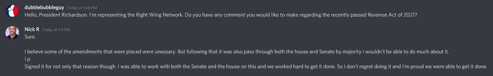
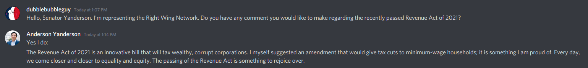

New Tax Legislation Passed
By dubblebubbleguy
July 22nd - 2:20 PM EST
Yesterday at 3:30 PM EST, President Nicholas Richardson signed off on the Revenue Act of 2021, officially adding it to the United States Code of Laws. The Right Wing Network has been following this bill for awhile, and we can now share the history of this bill and the trips that it has had around congress.
The Revenue Act of 2021 was officially introduced to the House of Representatives on July 19th during their session here. It was written by Speaker of the House Franklin Hudson with help from President Nicholas Richardson. You can find the text of the bill here.
The final version of the Revenue Act of 2021 strips out all previous tax codes and legislation and implements a few, simple tax rules. If you make between $1 and $10,000 annual income, then you pay 1.5% in taxes. If you make between $10,001 and $1,000,000, then you pay 15%. If you make over $1,000,000, then you pay 20%. There is also a corporate tax that taxes all corporations nation wide at 25% of their annual income, this includes media outlets.
However, the original version of the bill introduced by Franklin Hudson had two minor changes: the $1 - $10,000 tax bracket was taxed at 5%, and corporate taxes were set at 21%. This bill was approved by the House and sent to the Senate, where the Senate discussed it in their session on the 20th. In this session, Senator Yanderson fought hard to reduce taxes for the poor, stating: "I find it disturbing how a $10,000 annual income will be taxed 5%. That is below minimum wage, and that tax takes away an additional $500 yearly. What if a family needs that $500 for food, or for bills? I understand taxing the rich, but the poor are still disadvantaged by means of this bill." He also went on to propose his amendment to the bill, "I would like to lower taxes for $0-$10,000 households from 5% down to 1.5%." He was briefly fought on this by Spencer Landers, but Anderson Yanderson replied with the following: "That shouldn’t matter when we’re talking about a humanitarian crisis, especially homelessness and the minimum wage."
That shouldn’t matter when we’re talking about a humanitarian crisis, especially homelessness and the minimum wage.
- Senator Yanderson
In this same Senate session, Spencer Landers also proposed an amendment to the Revenue Act to raise corporate taxes to 25%, stating: "Yes @Senator Yanderson I would like to raise the corporate tax to 25 percent They have enough money they can spare more money." Both Lander's and Yanderson's amendments were passed by the Senate, and the bill was sent back to the House for another vote.
I would like to raise the corporate tax to 25 percent They have enough money they can spare more money
- Senate Majority Leader Landers
The House voted on the amended bill yesterday at 2:55PM EST, and it passed the House with 3/4 majority. It was then sent to President Nicholas Richardson, who signed it into law. While the amendments to this bill favor redistribution of wealth, the bill overall was a success for the right wing, as it stripped out the left leaning tax policies that the United States has been following for decades.
When asked for his opinion on the outcome of this legislation, President Nicholas Richardson had this to say: "I believe some of the amendments that were placed were unessary. But following that it was also pass through both the house and Senate by majority i wouldn't be able to do much about it. I Signed it for not only that reason though. I was able to work with both the Senate and the house on this and we worked hard to get it done. So I don't regret doing it and I'm proud we were able to get it done."

Senator Yanderson had this to say when he was asked for his opinion on these recent events: "The Revenue Act of 2021 is an innovative bill that will tax wealthy, corrupt corporations. I myself suggested an amendment that would give tax cuts to minimum-wage households; it is something I am proud of. Every day, we come closer and closer to equality and equity. The passing of the Revenue Act is something to rejoice over."

{kind=link}
{kind=link}